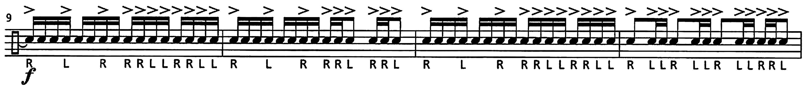

Review: Savage Rudimental Workshop by Matt Savage

Last week, I mused about how “one of these days” I would review Savage Rudimental Workshop… well, today’s the day.
I have some pretty strong opinions about rudiments, their importance to a 21st–century drum set player, and my frustration about the abstract reverence many drummers have towards rudiments. And very often, I recommend Savage Rudiments to any drummer that really wants to learn the rudiments.
The author, Matt Savage, is a bit of a drum corps big wig. Way back in the day, he marched in DCI with the Bayonne Bridgemen (a corps that’s no longer part of DCI). Some other notable credits include work as an instructor with the Bluecoats, USC’s marching band (gross), as well as UNC’s marching band (not to mention serving as a WGI judge). Nowadays, he seems to focus on his private teaching practice.
There are a couple rudiment books that are probably more well known than Savage Rudiments; eventually, I’ll review some of them, but many of the most famous ones are a bit outdated (with clunky notation) or are aimless in their design.
Published in 2001, Savage Rudiments obviously has a more modern bent, but to be clear, it’s not too caught up in wacky DCI interpretations of rudiments — the book walks a fine line between the original discipline of rudiments without being too stuffy and bygone.
The entire structure of the book is to present each rudiment with its own set of exercises, as well as an étude (usually around 32 bars) specifically built around the pattern in question.
For the most part, the exercises are pretty good. Some are a smidge overwrought — one of the warmups for the single stroke roll feature 8th note quintuplets and septuplets, which can be a challenge for inexperienced drummers to count. Other drills feature notation for upstrokes that can be a little distracting.
While the exercises are solid, the real star of the book has to be the solos. One of the reasons why I think this book is so great is that it makes practicing the rudiments interesting. Just grinding through the list of 40 is something I consider to be both a waste of time and heinously dull. But Savage Rudiments also helps you practice your reading skills, as well as your metronomic accuracy and your ability to navigate time signature changes, tempo changes, and dynamics.
Drilling rudiments over and over is good for building speed, but truth be told, there’re only four or five rudiments you should bother with trying to get fast. Meanwhile, Savage Rudiments uses each solo to provide pretty good benchmarks for how fast you should be able to get these licks going (I will concede that the tempo marking for the triple stroke roll solo is probably too fast).
Still, the book really tries to maintain a realistic focus, presenting some of the more common permutations you might see for these patterns. The ability to play the rudiments in time with surrounding music really provides significant insight into how the rudiments actually work “in the wild”.
The one major criticism I have of the book is the order of the rudiments. Savage Rudiments uses its own progression; most critically, all of the paradiddles are presented together, which means the flam paradiddle and drag paradiddles are covered before the book even brings up flams and drags are their own.
Honestly, this makes no sense — flam paradiddles are much harder than normal flams, so you need to get flams going before you tackle the more advanced rudiments. The neat thing about books is that you can use them in any way you want, so using your own order is easy enough… but this shouldn’t be a thing the reader needs to fix.
Nonetheless, I still think this is the best rudiment book out there. Once you get through all 40 rudiments, the book has two bonus solos for you to master so you can put it all together.
There’s a little bit of quirkiness in Savage Rudiments; some of the solos have rim clicks and stick clicks notated, which may have been done just to make them a bit more interesting if someone wanted to use them for a jury/recital piece. The book also comes along with two CDs that basically have tempo tracks for each solo, which help you nail the tempo changes in the solos that have them. But these play–along tracks have some weird sound effects that are quite distracting.
And yet, this is a very valuable book for those who really want to know what the rudiments are all about. I spent a lot of time with this book — it took me four years to get through it cover to cover, performing each solo to my satisfaction. Good luck!
I have one last thing I want to praise Savage Rudiments for: the engraving is top–notch, clearly done with a computer, but the best part is the sticking. The book steers clear of the stupid uppercase/lowercase sticking distinction for accents, but it also does this neat thing where it will provide the sticking for accents that are in a string of singles:
Genius!
Posted on January 31, 2021